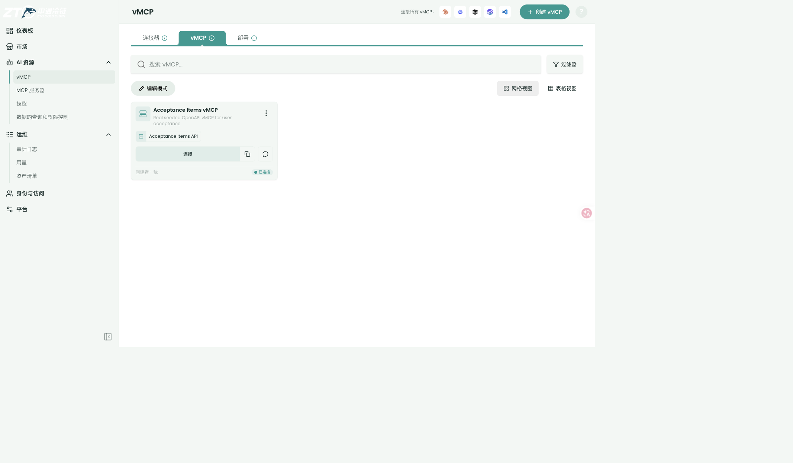
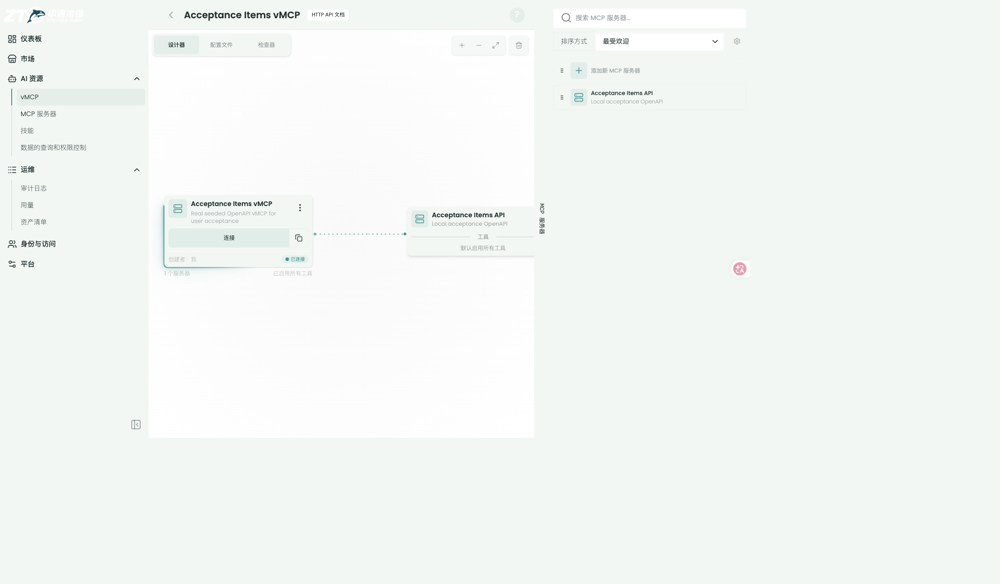
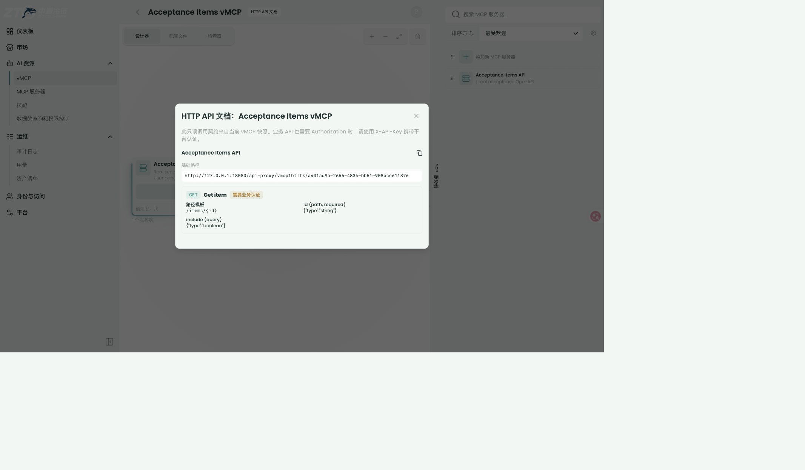
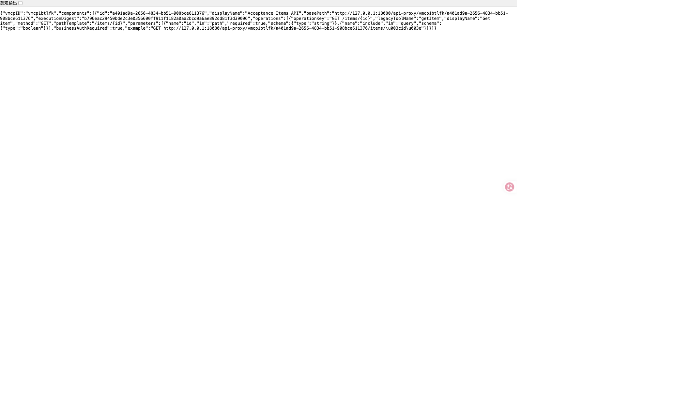
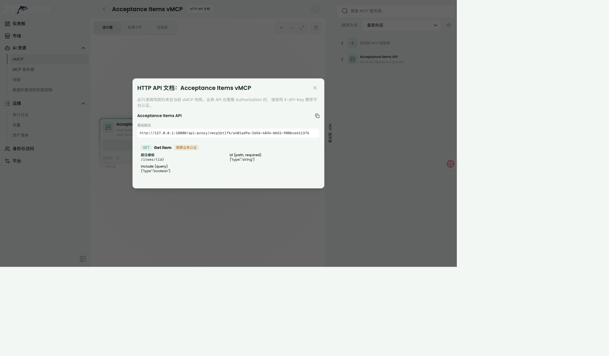
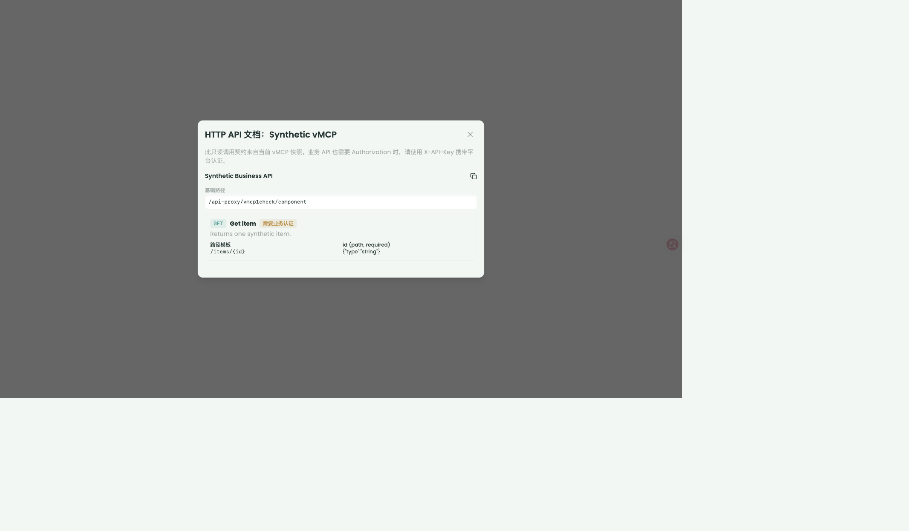

0
回归基线：原有 Obot 不变差
用户仍能看到仪表板、市场、vMCP、MCP 服务器、技能、审计日志等原有导航；既有 vMCP/MCP 能力保留。
PASS
面向用户验收的 PR 式总览：真实本地 Compose 环境、用户故事截图、架构前后对比、验证矩阵、剩余缺口与结论。本页集中展示当前全部验收材料，可直接按顺序审阅。
本版本将 OpenAPI 执行从“每个配置各自启动 / 连接 MCP wrapper”改为“Obot 统一授权、预算与租约，多个无状态 OpenAPI Worker 通过 mTLS 执行 OpenAPI operation”。Worker 无数据库、无 Docker socket、无必须持久化的本地状态，可按 Kubernetes Deployment 副本横向扩缩容；状态与预算继续使用现有 PostgreSQL。
Python Worker、固定 Worker 后端、HTTP API Proxy、调用文档 API/UI、跨副本 PostgreSQL 预算租约。
精确用户/实例凭证、mTLS、raw path/query/Header/body、全局并发、SSE 拒绝、请求响应上限、审计脱敏。
现有 vMCP / MCP 组件 / Profile / 实例 / 连接 / 目录 / 凭证存储与主要 UI 入口不变。
按真实使用顺序阅读：先证明原有能力不回退，再从 FastAPI OpenAPI 源头进入 Obot，完成管理员录入、市场上架、最终用户发现 MCP 工具、授权调用和普通 HTTP 调用，最后审阅架构与扩缩容。
用户仍能看到仪表板、市场、vMCP、MCP 服务器、技能、审计日志等原有导航；既有 vMCP/MCP 能力保留。
PASS业务方先提供标准 OpenAPI。页面展示 `GET /items/{item_id}`、必填 path 参数、query 参数和响应契约。
真实截图
FastAPI Security 声明 `APIKeyHeader`，位置为 Header，名称为 `Authorization`。这是后续用户凭证配置和注入依据。
真实截图
管理员选择「导入 OpenAPI 架构」，上传 FastAPI 生成的 `fastapi-openapi.json`。系统解析出 API 名称、base URL 和 Authorization 配置。
真实截图
保存后生成 `FastAPI Items API` 目录条目，来源为 Obot 管理控制台，运行时为 OpenAPI，业务凭证由用户提供且标记敏感/必填。
真实截图
发布开关从 OFF 改为 ON 后，目录条目 `metadata.marketPublished` 从 `false` 变为 `true`。页面文案明确“只有已上架的连接器会出现在终端用户市场”。
边界 真实非 Admin 用户市场对照未验证


用户打开 `FastAPI Items vMCP`，检查器显示 `get_item_items__item_id__get`，输入 schema 明确 `item_id` 必填和 `include` 可选。
真实截图
用户实例配置自己的业务 `Authorization` 后调用工具。Obot 按用户实例解析凭证，经 mTLS Worker 转发到 FastAPI，业务返回 HTTP 200 和真实 JSON。
HTTP 200

同一 vMCP 提供 UI 文档和标准 `openapi.json`。机器契约只暴露调用方可见的 base path、operations、参数 schema 与 `X-API-Key` 平台认证；不泄露内部凭证注入、execution digest 或平台实现细节。
GET /api-proxy/vmcp1bg67z/50e128c8-6dec-4d83-8db3-c48f6a1ff164/openapi.json GET /api-proxy/vmcp1bg67z/50e128c8-6dec-4d83-8db3-c48f6a1ff164/items/{item_id}


按文档调用 `/items/42?include=true`，Obot 使用当前用户实例凭证，返回 FastAPI 原始业务 JSON，不改变业务状态码和响应体。

Obot 负责 Principal-aware 授权、预算和租约；Worker 无数据库、无 Docker socket、无本地持久状态；PostgreSQL 保存共享状态。隔离 K8s 已验证 Worker `2 → 3 → 2` 全部 rollout 成功。
Scale PASS
架构边界：K8s 验收在隔离 K3s 完成，并已确认临时集群清理；当前本机保留的是 Docker Compose 验收栈，不依赖 K8s 控制面。
以下为端到端主线之外的补充回归、安全、运维和并发证据。标注“截图证据”的均为真实浏览器页面；标注“命令 / 代码 / 模型证据”的为自动化验证，不伪造截图。
用户打开本地 Obot，确认主导航完整。
预期：仪表板、市场、vMCP、MCP 服务器、技能、审计日志等既有入口仍可用。
截图证据
用户在 vMCP 列表看到真实验收资源。
预期：`Acceptance Items vMCP` 显示描述、组件、连接状态与创建者。
截图证据

用户打开 vMCP 详情并看到 OpenAPI 组件。
预期：画布包含 vMCP 节点与 `Acceptance Items API` 组件，且提供 HTTP API 文档入口。
截图证据

开发者查看只读 HTTP 调用文档。
预期：显示 base path、GET operation、path/query 参数、schema 与“需要业务认证”。
截图证据

API 消费方获取调用契约元数据。
预期：文档 API 返回 canonical base path、operation、参数、example、digest 与 `businessAuthRequired=true`。
截图证据

两个用户的业务凭证不串用。
预期：user-one 收到注入的 `Bearer user-one`，业务返回 200；user-two 收到 `Bearer user-two`，业务 403 原样保留。
命令 / 代码证据
TestRealI01PythonWorkerDescribeAndExecute user-one → Bearer user-one → 200 + exact JSON user-two → Bearer user-two → 403 + exact business body

运维横向扩缩 Worker，不丢业务状态。
预期：Worker 2→3→2 均完成 rollout；Worker 无持久卷，状态在 PostgreSQL。
隔离 K8s 证据
scale-up: obot=3/3, openapi-worker=3/3 PASS scale-down: obot=2/2, openapi-worker=2/2 PASS runtime: temporary K3s cleaned after acceptance
安全审核者验证 Worker 只接受受信 Obot。
预期：有效 client cert 成功；无证书与错误证书均拒绝。
安全测试证据
valid client certificate PASS / health JSON missing client certificate REJECTED untrusted client certificate REJECTED

平台跨副本控制并发、预算与 stale start。
预期：多 Manager PostgreSQL 测试通过；full lease model 覆盖 928,529 状态，破坏性 mutation 精确失败。
模型 / 数据库证据
PostgreSQL multi-manager tests PASS formal lease model PASS / 928,529 states early-release mutation FAIL-AS-EXPECTED stale-start mutation FAIL-AS-EXPECTED
用户继续使用既有 MCP / vMCP 能力。
预期：MCP JSON bridge、stateless JSON 回归通过；主要导航和 vMCP 管理入口不变。
截图 + 回归证据
http://127.0.0.1:18080/api/healthz → ok
1 Obot + 2 OpenAPI Worker + 1 PostgreSQL，Compose project：`openapi-workers-local`。
`Acceptance Items API` → `Acceptance Items vMCP` → 当前用户实例 / 配置。
| 验证项 | 结果 | 证据层级 |
|---|---|---|
| 目标 Go packages tests / vet | PASS | 自动化 |
| Python Worker 23 tests | PASS | 自动化 |
| 真实 Python Worker describe / execute | PASS | 真实进程 + TLS fake upstream |
| 双用户 200 / 403 + 精确凭证 | PASS | 集成测试 |
| UI browser test | PASS | 浏览器 |
| Svelte check | 0 error / 0 warning | 自动化 |
| 四语言 i18n key | PASS | 自动化 |
| 真实浏览器截图 | PASS | 用户可见证据 |
| Docusaurus typecheck / build | PASS | 自动化 |
| I02 formal baseline / broken model | PASS / expected failure | 形式化 |
| I04 formal lease model | PASS / 928,529 states | 形式化 |
| 隔离 K8s 2 Obot + 2 Worker | PASS | 隔离集群 |
| Worker scale 2 → 3 → 2 | PASS | 隔离集群 |
| mTLS 正例 / 无证书 / 错误证书 | PASS / REJECTED / REJECTED | 安全测试 |
| K8s runtime cleanup | PASS | 无 `openapi-k3s-acceptance` 容器 |
| 区域 | 主要路径 | 验收重点 |
|---|---|---|
| Python Worker | workers/openapi/** | 无状态、固定协议、23 项测试、真实进程互通 |
| Go Worker 协议 / Resolver / Executor | pkg/openapiworker/** | schema、path、Header、digest 与凭证语义 |
| HTTP Proxy | pkg/api/handlers/apiproxy/** | raw-prefix、唯一匹配、业务响应保留 |
| 专属授权 | pkg/api/authz/apiproxy*.go | 管理可见性与调用资格分离 |
| MCP JSON bridge | pkg/api/handlers/mcpgateway/openapi_bridge*.go | MCP tools/call 与 HTTP 共用执行入口 |
| 预算 / 租约 | pkg/openapi/executionbudget/** | 跨副本并发、lease fence、stale start |
| DB migration / types | pkg/gateway/{db,types}/openapi_* | PostgreSQL 状态与迁移 |
| UI 文档弹窗 | ui/user/src/lib/components/vmcps/VMcpAPIDocumentationDialog.svelte | base path、参数、业务认证标识 |
| Compose | deploy/compose/docker-compose.yml | 当前本地验收栈 |
| K8s example | deploy/k8s/openapi-workers.example.yaml | 无状态 Deployment；无集群级权限与 socket |
| ID | 缺口 | 影响 | 状态 |
|---|---|---|---|
| GAP-01 | 未使用真实企业 IdP / 业务系统 / JWT | 不能声明企业授权交换或生产业务安全 | 生产 pending |
| GAP-02 | 未部署生产 ingress / cert-manager / 镜像仓库 | 未验证生产 TLS、容量与发布流程 | 生产 pending |
| GAP-04 | K8s 验收在隔离 K3s，不在公司已有 Namespace | 未验证公司 RBAC / 网络 / 存储策略 | 预发 pending |
| GAP-05 | 未在 K8s 中逐一杀死 Pod 录制完整长链路矩阵 | 崩溃恢复由模型与单元 / PostgreSQL 回归覆盖，生产故障注入待做 | 预发 pending |
| GAP-06 | 实现尚未 commit / push | 无法产生真实 PR diff；当前需人工审阅 worktree | 待用户确认 |
| GAP-07 | 本地 auth disabled，且 Admin 市场页会显示未上架条目 | 不能用当前 Admin 页面证明真实普通用户添加前后市场可见性；需启用真实 IdP 后用非 Admin 用户复验 | 本地 UI 未验证 |
本地 / 用户验收：Ready。核心 Go / Python / UI / docs / formal / K8s / Compose 验证均通过；真实 Worker 进程、双用户凭证隔离、业务 403 保留、mTLS 正负例和 2→3→2 扩缩容均有证据。
生产验收：NOT READY。必须补真实企业授权、真实业务 API、生产或预发 Namespace、生产 TLS 与证书轮换、容量与故障注入。
| ID | 问题 | 修复 / 证据 | 状态 |
|---|---|---|---|
| PRE-01 | HTTP proxy adapter 把 `VMCPInstanceID` 误当作 Resolver connection ID，真实文档 503 | 改为查找当前用户、当前 VMCP instance、当前 component 的 `MCPServerInstance`；新增 `TestWorkerReferenceUsesCurrentUserConnection` | FIXED |
| PRE-02 | API 手工创建 VMCP 缺少预算 source reference，触发 `budget_identity_unavailable` | 生成稳定内部 `sourceURL::entryKey`；目标 Go tests 通过 | FIXED |
| PRE-03 | 文档 Header policy 丢失 `Required`，UI 不显示“需要业务认证” | Adapter 映射 Required；真实 API 返回 `businessAuthRequired=true` | FIXED |
| PRE-04 | 本地 Worker 镜像早于 Authorization credential 例外修复 | 重建 `obot-openapi-worker:local`；真实文档 API / UI 通过 | FIXED |
| PRE-05 | OpenAPI MCP bridge initialize 未声明 tools capability，聚合层因此不执行 tools/list，外部看到空工具列表 | initialize capabilities 增加 `tools: {}`；真实 Inspector 显示 FastAPI operation 工具 | FIXED |
| PRE-06 | 工具名优先使用含空格的 DisplayName，违反 MCP 标识符规则 | 优先暴露安全的 operationId，并按 MCP 规则清理标识符；新增单元测试 | FIXED |
| PRE-07 | Worker 默认 DNS 解析误用 `asyncio.SocketKind`，域名上游触发 internal error | 改为 `socket.SOCK_STREAM`；新增真实 hostname resolver 测试 | FIXED |
| PRE-08 | 本地 Compose 中 vMCP 聚合回环和 FastAPI 私网地址被安全策略阻断 | 配置 Obot 内部服务地址与显式 allowlist，不放宽全部私网；K8s example 同步内部服务地址 | FIXED |